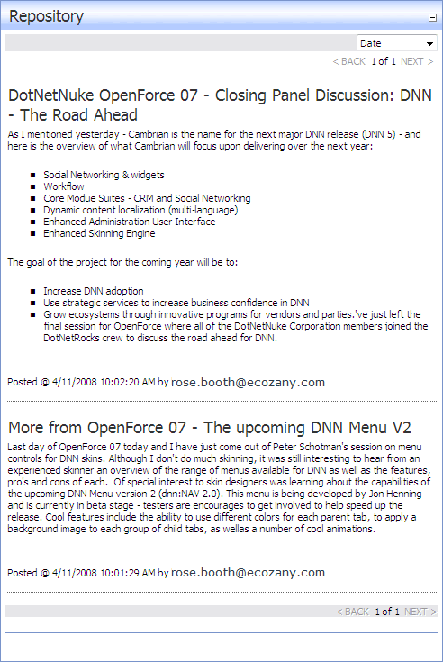

By applying the Blog skin, the Repository module can be used as simple blog module. Each blog post displays the blog title, blog content, and the date and time when the blog was posted. The blog author can optionally display their email address. Posts are listed from the most recently updated to the oldest. There are no downloads associated with this skin.
Sorting and comments are enabled on this skin.

The Blog Repository